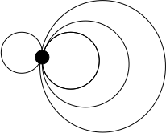
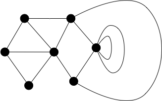
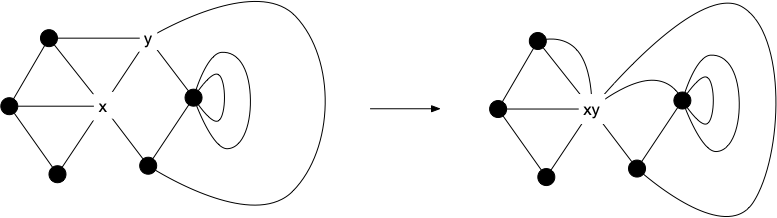
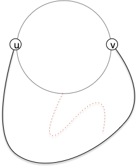
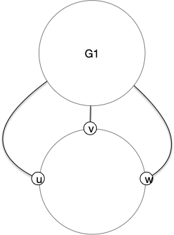
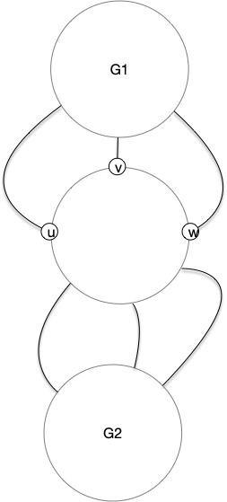
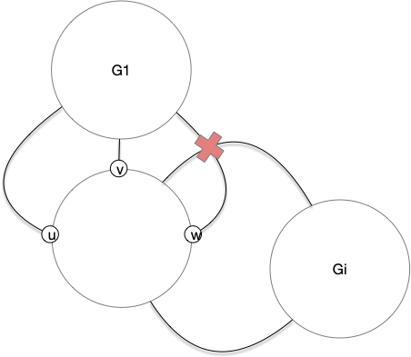
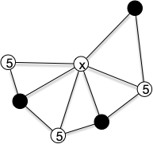
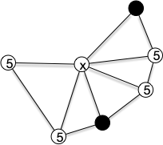

Propriétés
Faces
Comptage des faces
La proposition d'Euler ci-après fonctionne avec ds graphes très généraux. Nous allons ainsi la montrer pour des multi-graphes avec boucles, ce qui la fera fonctionner pour toutes ses restriction, en particulier les graphes.
Proposition (formule d'Euler)
Soit $G = (V, E)$ un multi-graphe connexe avec boucle et $(f, g)$ un de ses dessins planaires. Si $F$ est son nombre de faces, $n$ son nombre de sommets et $m$ son nombre d'arêtes, on a l'égalité :
preuve
preuve
Par récurrence sur $n$. Pour $n=1$, le graphe ne va avoir que des boucles et le graphe ci-après montre qu'il est planaire et que la formule d'Euler fonctionne, il y a 1 sommet, une face infinie et chaque arête ajoute une face intérieure :

On suppose par récurrence que la propriété est vraie pour $n$ et on considère un multi-graphe connexe avec boucle planaire à $n+1$ sommets. Par exemple celui-ci :

Le graphe étant connexe il possède une arête et l'on peut fusionner ses sommets en conservant toutes les arêtes :

La formule est alors respectée pour ce nouveau graphe qui a une arête et un sommet de moins que le graphe original mais exactement le même nombre de faces. On en déduit : $F = (m-1) - (n-1) + 2 = m - n + 2$.
On est obligé de supposer que le multi-graphe est connexe ($m\geq n-1$) pour garantir qu'il y ait au moins 1 face, la face infinie.
La formule d'Euler montre que le nombre de faces ne dépend pas de son dessin ! On peut donc parler du nombre de faces d'un graphe planaire indépendamment de son dessin planaire. L'exemple ci-après montre deux dessins planaires différents de $K_4$, les faces sont différentes, mais leur nombre (3) est le même :

3-connexes
Une dernière propriété des faces qui montre que les graphes 3-connexes possèdent une unique représentation graphique. Commençons par une implication :
Montrer que les cycles induits et non séparant d'un graphe sont des frontières de faces de ses représentations graphiques.
corrigé
corrigé
Si l'intérieur du cycle dans la représentation graphique contenait des sommets, le supprimer ne pourrait que déconnecter $G$. L'intérieur du cycle ne contient donc pas de sommets et comme il est induit c'est forcément une face.
La 3-connexité va impliquer la réciproque.
Proposition (Whitney, 1932)
Si $G$ est un graphe planaire 3-connexe, l'ensemble de ses cycles induits $C$ non séparant est exactement l'ensemble des faces de ses représentations planaires.
preuve
preuve
Prenons une face d'un graphe planaire 3-connexe et considérons sa frontière. Si ce cycle n'est pas induit, on se retrouve dans la condition suivante :

Et supprimer $u$ et $v$ va déconnecter le graphe ce qui est impossible puisque le graphe est 3-connexe.
Supposons cette frontière séparante et considérons $G_1, \dots, G_k$ les $k$ parties connexe de $G$ privé du cycle. Pour chaque $G_i$, on note $A(G_i)$ les sommets du cycle étant des extrémités d'arête finissant $G_i$. Comme $G$ est 3-connexe $\vert A(G_i)\vert \geq 3$ pour tout $i$. Pour $G_1$ on se retrouve dans cette situation :

Mais comme $G_2$ est aussi à l'extérieur du cycle il est forcément à l'intérieur de 2 éléments de $A(G_1)$ consécutifs :

Ce qui est impossible puisque les supprimer déconnecterait $G_1$ de $G_2$ (aucun $G_i$, $i>2$, ne peut avoir de sommets de $A(G_i)$ de part et d'autre de ces sommets) et $G$ est $3$-connexe :

Il y a donc au mieux un seul $G_i$ et le cycle est non séparant.
Les représentations graphiques sont différentes si les frontières sont différentes, par exemple le graphe $K_{2, 4}$ en possède au moins 2, les graphes planaires 3-connexes n'ont donc qu'une seule représentation graphique.
Degrés des graphes planaires
La formule d'Euler permet de borner le nombres d'arêtes d'un graphe planaire :
Proposition
Soit $G = (V, E)$ un graphe planaire à $n\geq 3$ sommets et $m$ arêtes. On a l'inégalité :
preuve
preuve
Pour chacune des $F$ faces d'un dessin planaire de $G$, on note $f_i$ le nombre d'arêtes formant la frontière de la face $i$. Comme chaque arête est sur la frontière d'exactement 2 faces, on a $\sum f_i = 2m$ et comme chaque face a au moins 3 arêtes il vient l'inégalité : $3F\leq \sum f_i = 2m$. En injectant la formule d'Euler dans cette inégalité on obtient $3(m - n + 2)\leq 2m$ d'où le résultat.
Un graphe planaire a donc très peu d'arêtes, au pire 3 fois plus que de sommets. Ceci implique qu'il existe un sommet de petit degré :
Proposition
Soit $G = (V, E)$ un graphe planaire. Il existe un sommet $x$ de degré inférieur ou égal à 5.
preuve
preuve
Si tous les sommets avaient un degré strictement plus grand que 5 on aurait : $2\cdot m = \sum\delta(x) \geq 6 \cdot n$, donc $m\geq 3\cdot n$. Ceci est cependant impossible puisque $m \leq 3\cdot n - 6 < 3\cdot n$.
Triangulation
TBD si toutes les faces sont des triangles alors. TBD c'est facile à faire on triangule les faces des composantes 2-connexes. et ce sera tres utile ensuite.
TBD https://facultyweb.kennesaw.edu/mlavrov/courses/graph-theory/lecture21.pdf
Donc trianguler une représentation planaire triangule toutes les autres, même si les faces sont différentes !
TBD comment trianguler : https://fr.wikipedia.org/wiki/Triangulation_d'un_polygone
TBD quasi-triangulé si toutes les faces sauf la face infinie est triangulée. TBD c'est ce que l'on fait avec les mesh : surfaces
Inévitabilité
L'inévitabilité de structure dans les graphes planaire est une des bases du théorème des 4 couleurs. Nous allons montrer ici le principe de preuve de ces théorème : "le principe de décharge".
On utilisera toujours des graphes triangulés avec cette méthode car comme ils possèdent le nombre maximum d'arêtes pour un graphe planaire, $m = 3n-6$ et comme $\sum\delta(x) = 2m$ on a :
Cette formule est remarquable ! Elle a été utilisée pour la première fois en 1904 :
*Proposition (Wernicke, 1904)
Toute triangulation d'un graphe planaire de degré minimal au moins 5 contient un sommet de degré 5 adjacent à un sommet de degré au plus 6.
preuve
preuve
On va associer à chaque sommet $x$ du graphe une charge $c(x) = 6-\delta(x)$. Pour notre graphe, seul les sommets de degré 5 on une charge positive (valant 5). On va ensuite appliquer la règle suivante : "tout sommet de degré 5 va donner 1/5 de ses charges à chacun de ses voisins".
À l'issue de l'application de cette règle, la somme totale des charge vaut toujours 12 : il existe un sommet de charge strictement positive. On étudie maintenant les cas :
- si son degré vaut 5 c'est qu'un de ses voisins lui a donné une charge et la proposition est démontrée
- si son degré vaut 6 c'est qu'elle a reçu une charge d'un de ses voisins et la proposition est démontrée
- si son degré vaut 7 ou plus alors on a deux cas :
- soit deux de ses voisins de degré 5 forment une arêtes et la proposition est démontrée
- soit aucun de ses voisins de degré 5 ne forme une arête ce qui signifie, comme le graphe est triangulé, que seul un de ses voisins sur deux dans l'ordre du dessin peut être de degré 5

Mais ce dernier cas est impossible car dans ce cas là sa charge finale serait inférieure à :
Donc les sommets de charge finale positive contiennent dans leur voisinage fermé un sommet de degré 5 et un sommet de degré inférieur ou égal à 6 qui sont voisins.
Cette technique de preuve est appelé charge/décharge et s'est révélée féconde : on déplace des charges d'un sommets à l'autre en conservant la somme totale qui représente la structure du graphe. Allez, à vous, pour généraliser le résultat précédent :
(Franklin, 1922)
Toute triangulation d'un graphe planaire de degré minimal au moins 5 contient un sommet de degré 5 adjacent à deux sommets de degré au plus 6.
Vous pourrez utiliser une règle déchargeant des sommets de degré 5 sur des sommets de degré au moins 7.
corrigé
corrigé
Il suffit de donner une charge initiale de $6-\delta(x)$ à chaque sommet $x$ et d'appliquer la règle :
"tout sommet de degré 5 va donner 1/4 de ses charges à chacun de ses voisins de degré 7 ou plus".
Le même raisonnement que précédemment montre qu'à l'issue de l'application de la règle la charge totale doit toujours être strictement positive et examinons les cas :
- si son degré vaut 5 c'est qu'au plus 3 de ses voisins sont de degré 7 ou plus
- il est impossible que son degré soit 6 puisqu'il ne peut pas gagner de charge
- si son degré vaut 7 ou plus alors on a deux cas :
- soit trois de ses voisins consécutifs sont de degré 5
- soit au plus 2 voisins consécutifs sont de degré 5 suivi d'un sommet de degré > 6.

Dans ce dernier cas, le nombre maximum de voisin de degré 5 que peut avoir le sommet est $\lfloor\frac{3 2}{3}\delta(x)\rfloor$ et sa charge finale est inférieure à :
On utilise des graphe de degré minimal au moins 5 car cette technique a été développé dans l'optique de prouver le théorème des 4 couleurs pour lequel, on va verra, on peut très vite se ramener à des graphes planaires de degré minimum 5.
Nombre minimum de croisements de graphes non planaires
Enfin, une dernière propriété sur les graphes nom planaires.
Pour tout graphe $G$, on note $\text{cr}(G)$ le nombre minimum de croisements d'arêtes qu'un dessin de $G$ peut avoir.
Les graphes planaires sont bien sur les graphes $G$ tels que $\text{cr}(G) = 0$. Et $\text{cr}(K_5) = 1$ (il n'est pas planaire et on l'a dessiné avec uniquement 1 croisement d'arête). Pour chaque graphe, il faudrait pouvoir trouver tous ses dessins possibles et compter pour chacun le nombre de croisements, ce qui est impossible à faire en pratique.
Il existe cependant des bornes dépendant uniquement du nombre de sommets et d'arêtes. Par exemple :
Montrez que pour tout graphe $G$ à $n$ sommets et $m$ arêtes on a $\text{cr}(G)\geq m-3n$.
corrigé
corrigé
On sait que $m \leq 3n-6$ pur un graphe planaire. Tout graphe avec plus d'arêtes va donc avoir au moins 1 croisement par arête surnuméraire : on peut itérativement supprimer une arête qui possède un croisement (il en existe forcément une si $m-3n+6>0$).
Mais on peut faire bien mieux en utilisant la méthode probabiliste ! Nous allons utiliser cette méthode de façon différente des fois précédentes en choisissant la probabilité d'apparition des arêtes a posteriori :
Proposition
Pour tout graphe $G = (V, E)$ à $n$ sommets et $m$ arêtes tel que $m\geq 4\cdot n$ on a :
preuve
preuve
Si on peut prouver cette inégalité en utilisant la méthode probabiliste, il faut pouvoir associer à un graphe $G=(V, E)$ un autre graphe, $H=(V', E\vert_{V'})$, aléatoire tel que $V'$ est un sous-ensemble de $V$ où tout élément a été choisi indépendamment des autres avec une propriété $p$. On a alors :
- $\mathbb{E}[v(H)] = p\cdot n$
- $\mathbb{E}[e(H)] = p^2\cdot m$
Si on dessine $H$ en prenant la restriction d'un dessin de $G$ minimisant son nombre de croisements. Le nombre moyen de croisements de ce dessin pour $H$ vaut $p^4\text{cr}(G)$ puisque chaque croisement est un formé de 2 arêtes de $G$ qui ont chacune une probabilité $p^2$ d'être dans $H$.
De là si $C(H)$ est le nombre de croisement de la restriction à $H$ d'un dessin de $G$ minimisant les croisement, on a : $C(H) \geq \text{cr}(H) \geq e(H) - 3 \cdot v(H)$. Donc par linéarité de l'espérance on a également : $ \mathbb{E}[C(H)]\geq \mathbb{E}[e(H)] - 3 \cdot \mathbb{E}[v(H)]$ c'est à dire :
Et donc :
Comme on cherche une borne min, il faut maximiser la fonction $f(p)=\frac{p\cdot m - 3\cdot n}{p^3}$, ce qui est le cas pour $p = \frac{9}{2}\frac{n}{m}$, pour simplifier on prend $p=4n/m$, ce qui impose $m\geq 4n$ et donne le résultat.
TBD exemple.